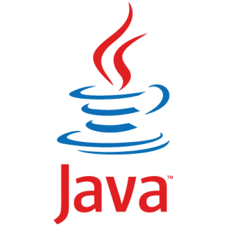
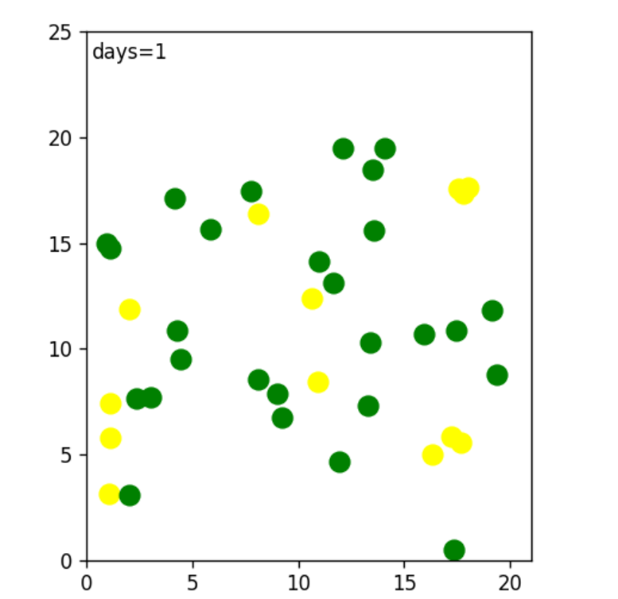
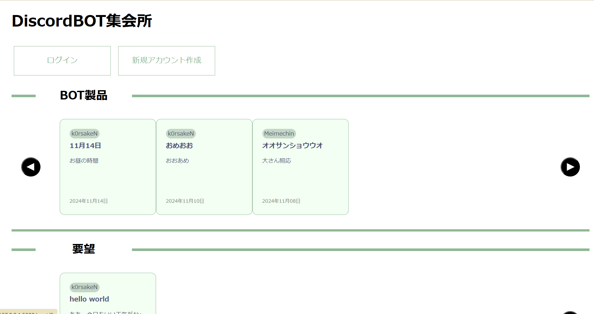
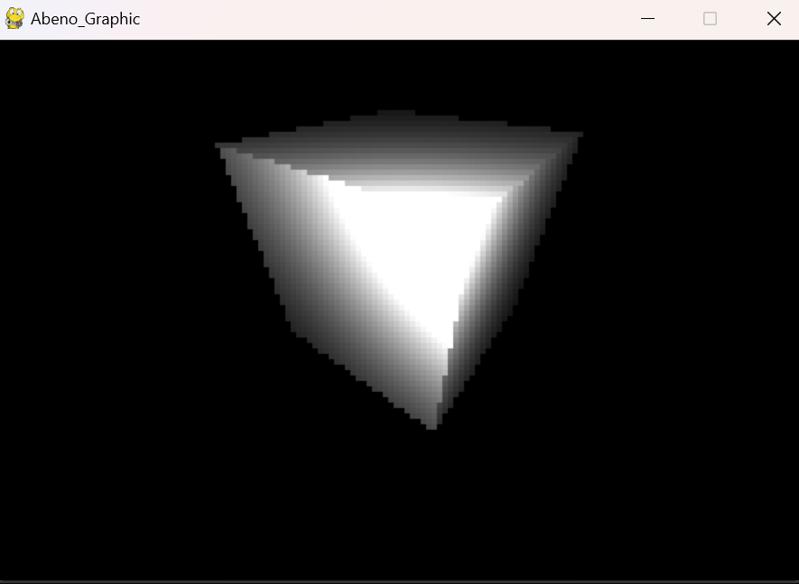
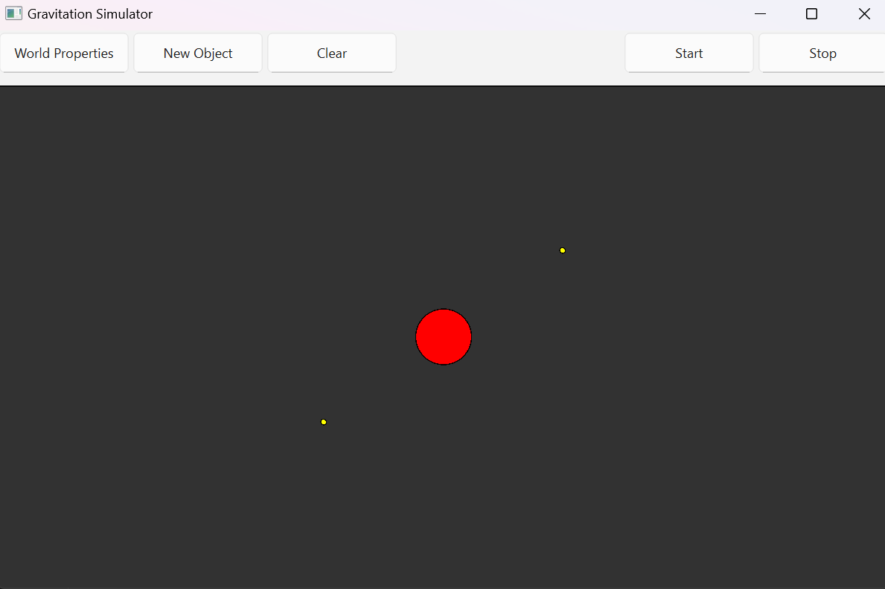

名前 安部航生
生年月日 2008年3月11日
大阪公立大高専 ２年
Introduce
Skills

Java
中学三年生の夏頃から独学を続けています。学習を経てオブジェクト指向についての理解がものすごく深まりました。また、Swingを用いたGUIアプリケーション開発やサーブレット、JSPを用いた動的ウェブアプリケーション開発に没頭していました。

Python
高校一年生の冬頃から学習を続けています。Flaskを用いた動的ウェブアプリケーション開発やPandas,pytorch,scikit-learnなどのモジュールを利用して機械学習に触れました。

C /C++
高校一年生の冬頃から学習を続けています。ポインタとアドレスについての理解がよく深まりました。

HTML /CSS / JavaScript
高校一年生の秋頃から学習を続けています。これまで幾度もウェブページを作成してきました。これからも継続して経験を重ね行きたいと思います。
History
2022年 8月：Javaを始める
2023年 4月：大阪公立大学専門学校に入学
2023年10月：HTMLCSSJavaScriptを始める
2023年12月：Python、C言語を始める
2024年 7月：Pythonで感染症シミュレーターを作成
2024年 9月：パソコン甲子園に出場
2024年 11月：yahoo主催のHUCK UでDiscord集会所を作成
2025年 1月：Pythonで3次元描画ライブラリを作成
2025年 2月：Pythonで万有引力シミュレーターを作成
Works

Python
感染症シミュレーター
シミュレーション期間(日)や人口、密度、免疫力、感染力などの様々なパラメーターを調整して感染症が広がる過程をシミュレーションすることができます。


PythonHTMLCSS
Discord集会所
PythonのFlaskを利用して作った動的ウェブアプリケーションです。
Python

3次元描画ライブラリ
Pythonで3次元の描画を行うライブラリです。
処理速度などの問題をPyPyに最適化することで解決できました。
Python
万有引力シミュレーター
PythonのPySideを使ったGUIアプリケーションです。
万有引力定数やそれぞれのオブジェクトの質量、初速度、半径を指定してシミュレートできます。